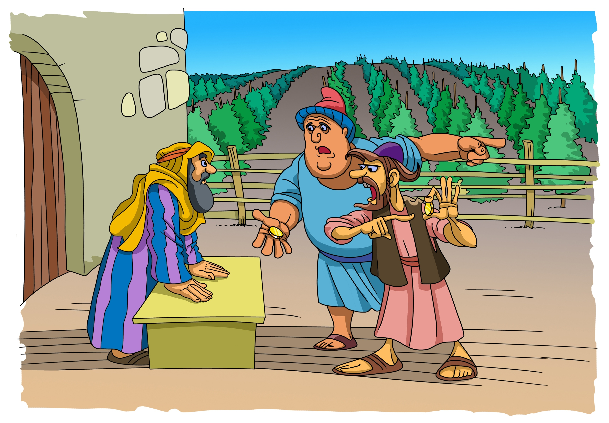

The Parable Of The Workers In The Vineyard
For the kingdom of heaven is like unto a man that is an householder, which went out early in the morning to hire labourers into his vineyard.
And when he had agreed with the labourers for a penny a day, he sent them into his vineyard.
And he went out about the third hour, and saw others standing idle in the marketplace,
And said unto them; Go ye also into the vineyard, and whatsoever is right I will give you. And they went their way.
Again he went out about the sixth and ninth hour, and did likewise.
And about the eleventh hour he went out, and found others standing idle, and saith unto them, Why stand ye here all the day idle?
They say unto him, Because no man hath hired us. He saith unto them, Go ye also into the vineyard; and whatsoever is right, that shall ye receive.
So when even was come, the lord of the vineyard saith unto his steward, Call the labourers, and give them their hire, beginning from the last unto the first.
And when they came that were hired about the eleventh hour, they received every man a penny.
But when the first came, they supposed that they should have received more; and they likewise received every man a penny.
And when they had received it, they murmured against the goodman of the house,
Saying, These last have wrought but one hour, and thou hast made them equal unto us, which have borne the burden and heat of the day.
But he answered one of them, and said, Friend, I do thee no wrong: didst not thou agree with me for a penny?
Take that thine is, and go thy way: I will give unto this last, even as unto thee.
Is it not lawful for me to do what I will with mine own? Is thine eye evil, because I am good?
So the last shall be first, and the first last: for many be called, but few chosen.
Matthew 20:1-16
